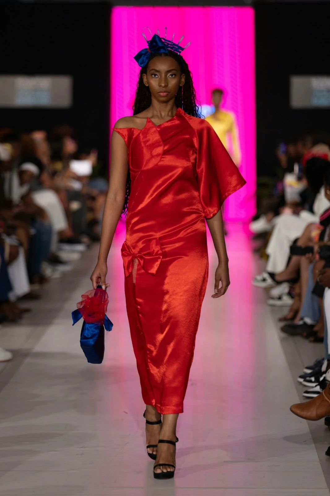
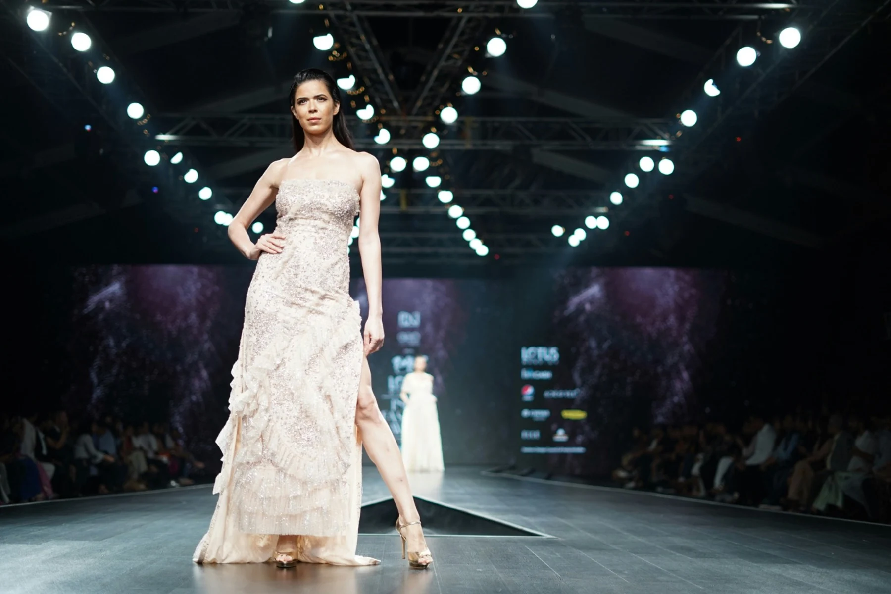
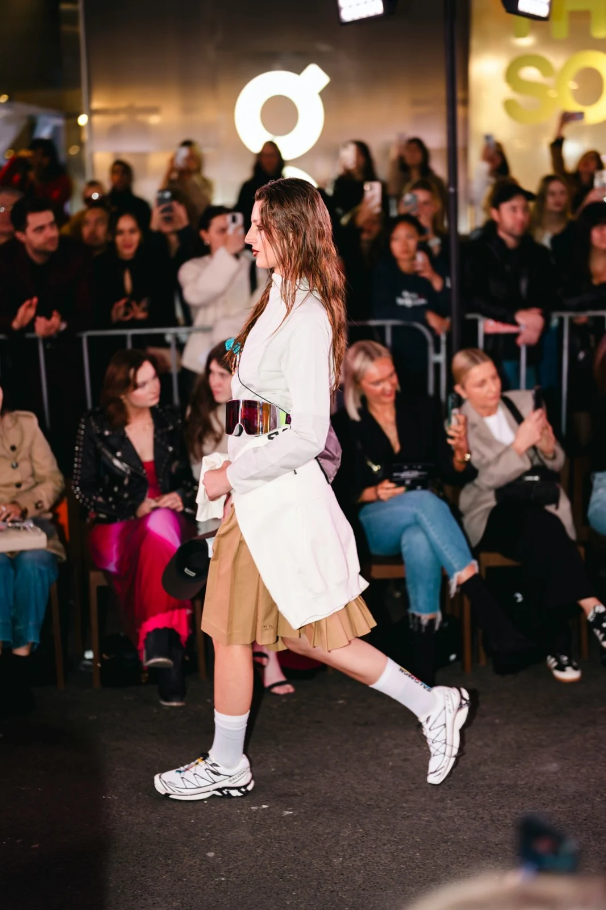
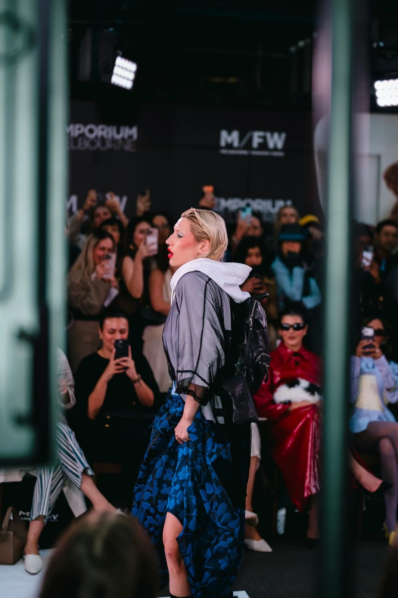
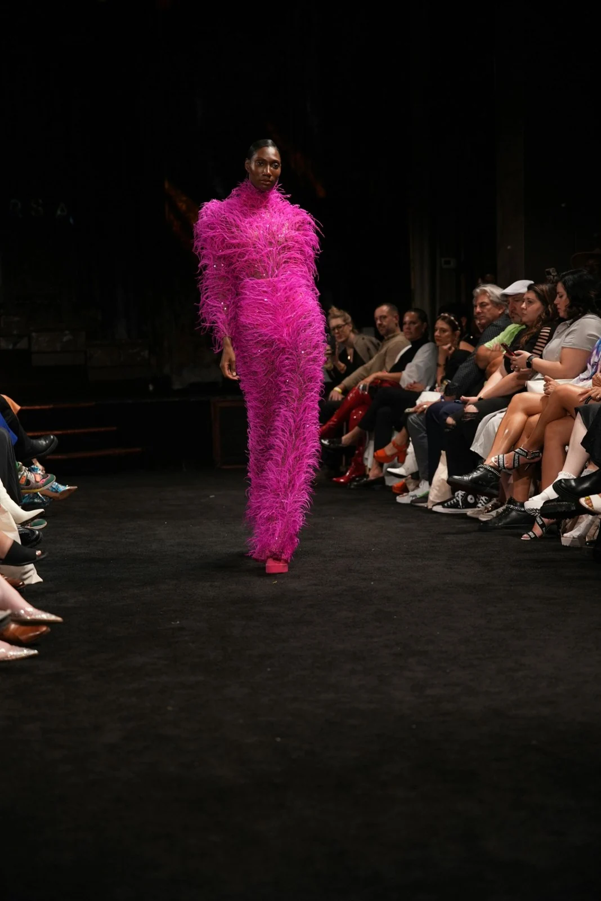
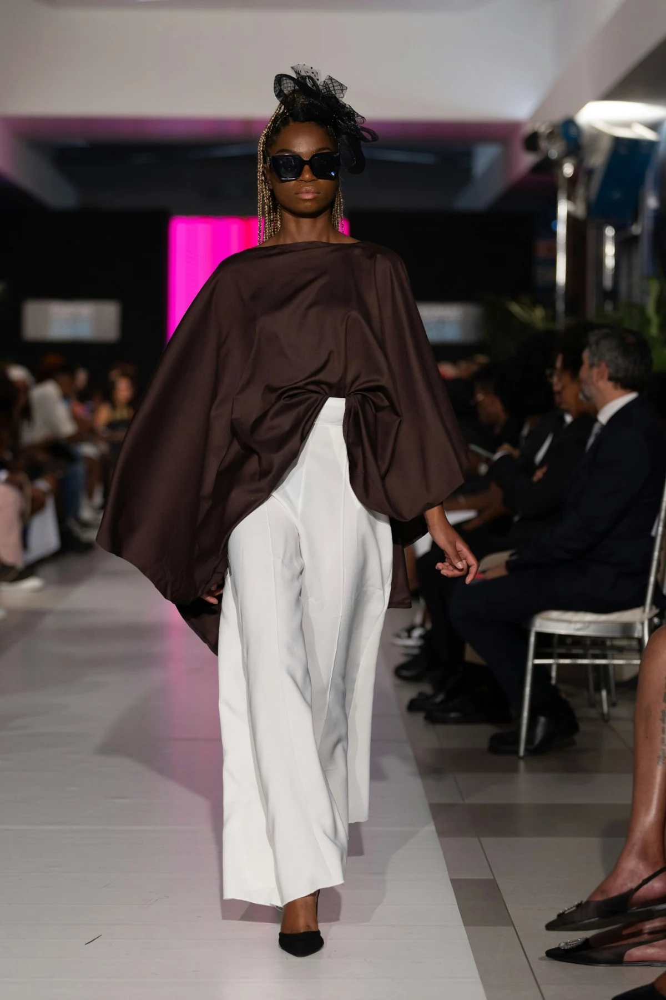
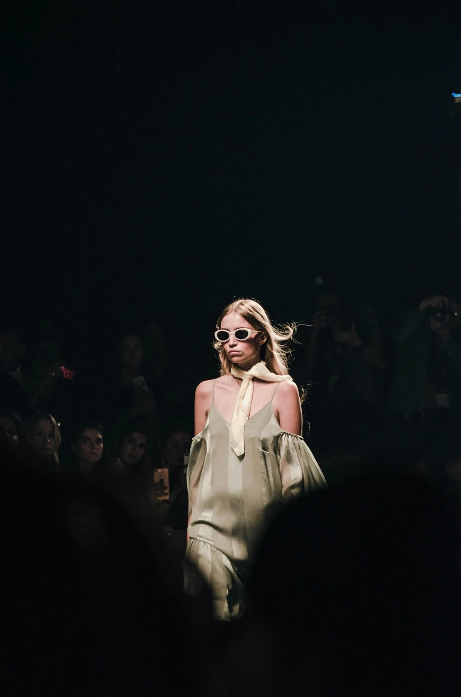

New voices
Meet designers with stories worth sharing.
INTERNATIONAL FASHION EXPERIENCE / 2027
One runway. Many cultures. A night of bold ideas, new designers and unforgettable looks — open to everyone.

THE EXPERIENCE
Discover emerging talent, creative silhouettes and fresh perspectives in a welcoming, international atmosphere.
No German required. Clear English signage, a visual-first programme and accessible visitor information make it easy to join in.
Discover our story →Spend an evening discovering fashion from different cultural perspectives, meeting fellow visitors and experiencing two runway presentations in one welcoming setting.
Meet designers with stories worth sharing.
Runway moments, music and connection.
An experience made for international visitors.






YOUR FRONT-ROW MOMENT
EXPLORE MORE / TAP TO OPEN
Tap a question to discover more.